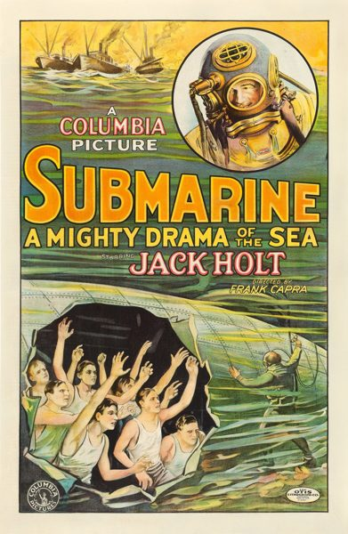
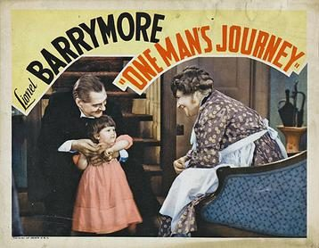
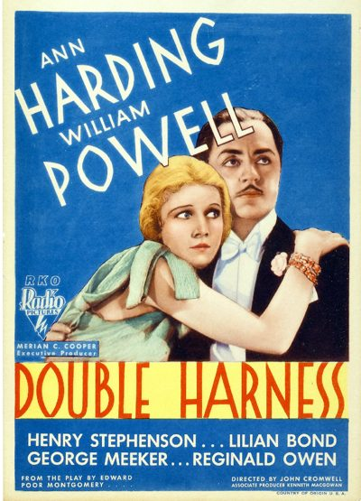

THE STANFORD THEATRE
Now Showing
·
Upcoming
·
Past
·
Search
October 20 - December 24, 2007
Fall 2007 The Films of Frank Capra, plus other favorites
20 bills
October 20 - 23
Sunset Boulevard (1950)
110 min
Some Like It Hot (1959)
120 min
October 26
Oh... Rosalinda! (1955)
101 min
The King and I (1956)
133 min
October 27
Skinner's Dress Suit (1926)
Oh... Rosalinda! (1955)
101 min
October 28 - 30
Oh... Rosalinda! (1955)
101 min
The King and I (1956)
133 min
November 2
The Power of the Press (1928)
62 min
Hemo the Magnificent (1957)
60 min
November 3 - 6
Lady for a Day (1933)
92 min
Ladies of Leisure (1930)
102 min
November 9
I'm No Angel (1933)
87 min
Rafter Romance (1933)
73 min
November 10 - 13
It Happened One Night (1934)
105 min
Platinum Blonde (1931)
89 min
November 16

Submarine (1928)
The Unchained Goddess (1958)
November 17 - 20
Mr. Deeds Goes to Town (1936)
115 min
The Miracle Woman (1931)
91 min
November 23
The Devil to Pay (1930)
97 min

One Man's Journey (1933)
72 min
November 24 - 27
Lost Horizon (1937)
97 min
The Bitter Tea of General Yen (1933)
87 min
November 30
The Strong Man (1926)
75 min
The Strange Case of the Cosmic Rays (1957)
December 1 - 4
You Can't Take It with You (1938)
126 min
The Younger Generation (1929)
75 min
December 7
Hot Saturday (1932)
72 min

Double Harness (1933)
69 min
December 8 - 11
Mr. Smith Goes to Washington (1939)
129 min
American Madness (1932)
75 min
December 14
The Battle of Russia (1943)
83 min
Prelude to War (1943)
52 min
Divide and Conquer (1943)
57 min
The Battle of Britain (1943)
54 min
December 15 - 18
Arsenic and Old Lace (1944)
118 min
Dirigible (1931)
102 min
December 21 - 23
The Shop Around the Corner (1940)
99 min
The Bishop's Wife (1947)
109 min
December 24
It's a Wonderful Life (1946)
125 min
SOLD OUT